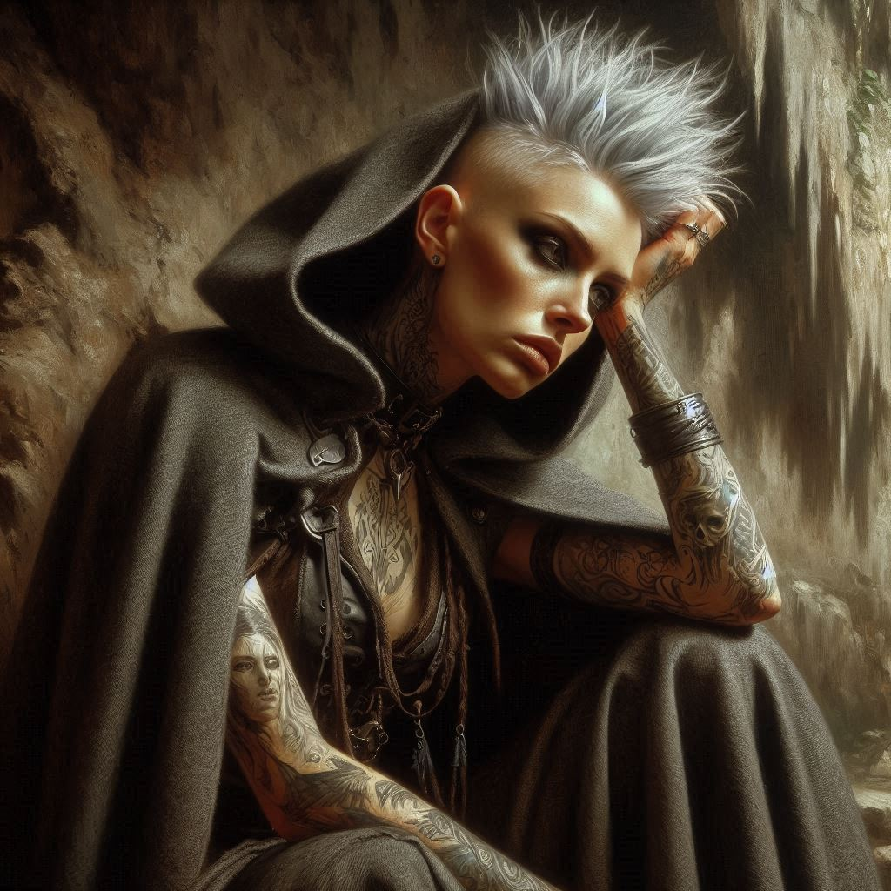
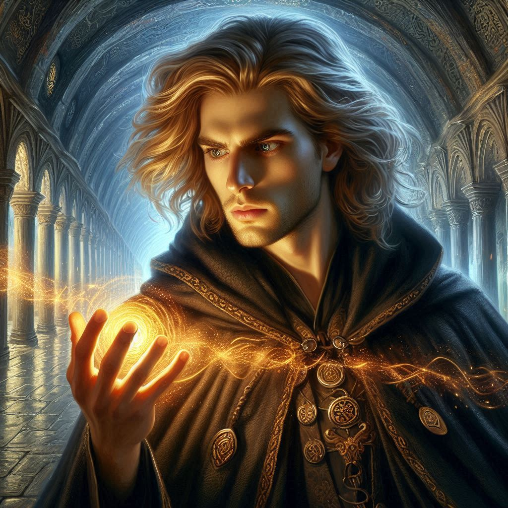
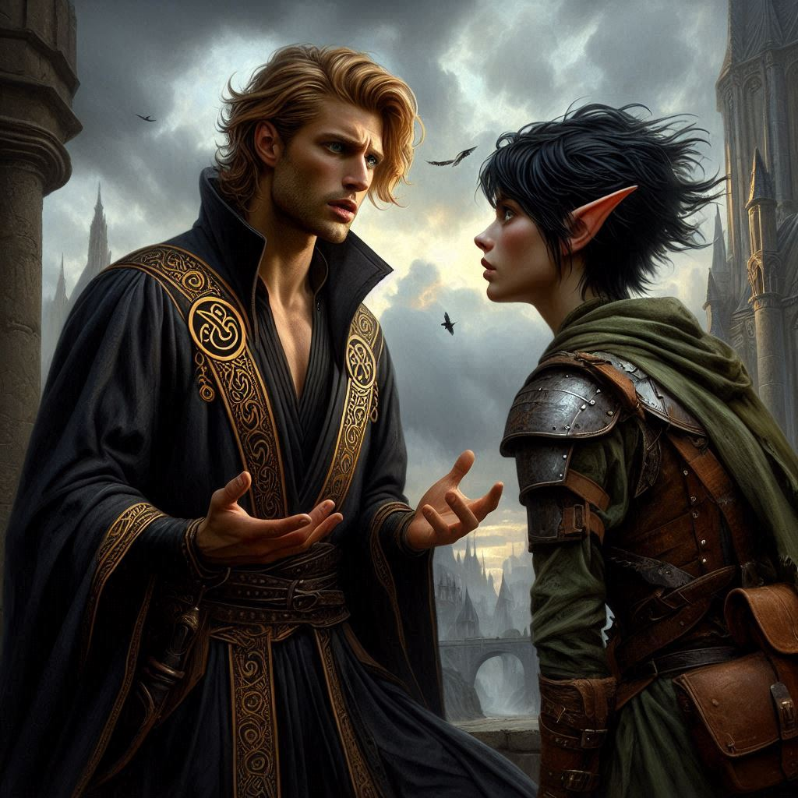

The Fugitive's Captive
You stand over Jorsh, your heart pounding in your chest. His dark magic binds his hands, and his face is bruised from the struggle, yet he still manages to meet your gaze with that same intensity he had when you were both young. The same fire that made you love him, and now, that same fire that makes you fear him. You turn to Princess Hawthorn, her expression veiled behind royal poise, though you can see the worry in her eyes.
"Taking him with us is a mistake," Hawthorn warns, her voice cold but steady. "He’s already betrayed you once, Kira. He will do it again."
But you shake your head. You know Jorsh better than anyone, despite everything. His bitterness, his anger—it’s all justified, isn’t it? He believes in something, and you can’t ignore the truth he revealed about Varis. The Minister of Trade is working with dark forces to overthrow the Kingdom of Yew. Jorsh’s knowledge of the Shadow Realm and Hemlock Caverns might be the key to stopping Varis and the portal to Yaldaboath.
"We need him," you say firmly. The words taste bitter on your tongue, but you force them out. "He knows Varis better than anyone. Without him, we might not stand a chance."
Hawthorn narrows her eyes but doesn't argue. Liora, still weak from the earlier battle, stands by silently. Her pale skin is almost translucent, her eyes tired but filled with magic that still simmers beneath the surface. "If you trust him, Kira, so will I," Liora says, placing a hand on your shoulder. "But if he turns on us again—"
"He won’t," you interrupt. At least, you hope he won’t.
You move forward, pulling Jorsh to his feet. His bound wrists radiate with the dark magic Liora had conjured to subdue him, but he doesn’t struggle. Instead, he leans close, his voice low and intimate, like it was years ago when you were just children.
"You’re making the right choice," Jorsh murmurs, and for a fleeting moment, you want to believe him.
The journey deeper into Hemlock Caverns is fraught with tension. The walls narrow, the air grows colder, and a thick mist curls at your feet. Each step feels like a descent into something darker than you’ve ever faced before. Ahead, you can sense the power of Varis's magic pulsing through the stone, leading you closer to the hidden temple where the portal to the Shadow Realm lies.
Jorsh walks beside you, his presence a constant reminder of the risk you've taken. Every time you glance at him, you feel the pull of old feelings—his face, though hardened by years of dark magic and betrayal, still stirs something inside you. But you force yourself to focus. Varis must be stopped. That’s what matters.
As you near the chamber of portals, the mist thickens, and you feel the weight of the magic here pressing down on you. The air hums with power, and even Hawthorn looks unnerved, her royal demeanor slipping for the first time. Liora stumbles slightly, and you notice her hands trembling. The battle with Jorsh took more out of her than she let on.
"Liora," you whisper, catching her arm. "Are you alright?"
"I’ll be fine," she replies, but her voice wavers. "Just… need a moment."
Hawthorn moves to support her, and you take the opportunity to glance at Jorsh. His eyes are fixed ahead, focused on the temple, his brow furrowed with concentration. A deep unease gnaws at you. You’ve made a gamble bringing him this far, and now the stakes are higher than ever.
Suddenly, Jorsh halts. You see his eyes flicker with dark power as he looks down at his bound wrists. A cold smile creeps across his face.
"It was inevitable, Kira," he says softly. "You can’t hold me forever."
Before you can react, Jorsh summons a surge of dark magic, breaking the restraints on his wrists with a flash of violet energy. You hear a cry from Liora as the force knocks her to the ground, her magic depleted.
"No!" Hawthorn shouts, rushing forward, but she’s too late. With a swift gesture, Jorsh sends her flying back with a wave of shadowy force. The princess crashes into the cavern wall and slumps to the ground, unconscious.
"Jorsh, stop!" you scream, reaching for your sword, but he’s faster. In a heartbeat, he grabs your wrist, and you feel the pull of his magic enveloping you. The world around you begins to dissolve into shadows, the cavern fading into darkness.
"I’m not your enemy, Kira," he says, his voice echoing through the void. "But I can’t let you stop me. Not now."
With a final surge of magic, the shadows consume you. When the world reforms around you, you’re no longer in Hemlock Caverns. The air is thick with an otherworldly chill, and the sky above is an inky black, dotted with strange, glowing stars.
You’re in the Realm of Shadows.
You glance around, your heart racing. The landscape is dark and twisted, filled with jagged spires of rock and flickering shadows. In the distance, you can see the towering form of Umbra'Thal, the capital of the dark elves. Jorsh stands beside you, his expression unreadable, but you can feel the weight of his magic all around you.
"We’re here," he says softly. "Umbra'Thal. The heart of the Shadow Realm."
He turns to you, his eyes filled with something you haven’t seen before—hope. "Kira, we can still stop Varis. Together. But I need you to trust me. Help me, and I promise, I’ll end this."
You feel the weight of his words pressing down on you. Everything you’ve been through, all the betrayals, all the battles—it’s led you here. To this moment. But can you trust him? Can you believe in him again after everything he’s done?